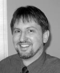
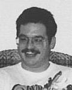
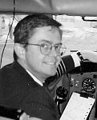
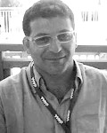
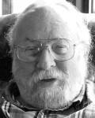
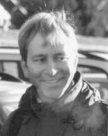
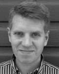
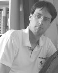
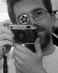

|  |  |  |
|
Jon
Berndt, Jon designed the original architecture, and continues to refine it, with inputs from the other team members. He has worked with military and space training and engineering simulators for many years. Jon is an aero engineer (University of Minnesota). His web site. |
Tony
Peden Tony has been contributing to the growth of JSBSim almost from day 1. He is responsible for integrating JSBSim with FlightGear, and for initialization and trimming. Tony also implemented David's property system into JSBSim. Tony hails from Ohio State University, with a degree in Aero and Astronautical Engineering. |
David Culp
David developed the turbine simulation for JSBSim, as well as aircraft models that use it, including the T-38. He has experience flying many types of military and commercial aircraft, including the T-38, and the Boeing 707, 727, 737, 757, 767, the SGS 2-32, and the OV-10. David is an aero engineer (USAF Academy). |
|  |  |  |
|
Agostino De
Marco Agostino De Marco is a professor of aerospace engineering at the University of Naples in Italy. |
Lee Duke Lee Duke, the Chief Engineer of Rain Mountain Systems since 2004, retired from the NASA Dryden Flight Research Center in 2002 where he worked in flight test, flight controls, modeling and simulation, atmospheric flight dynamics, flight systems, and applications of artificial intelligence to aircraft systems. He is a member of IEEE, AIAA, and AUVSI. |
Mathias Froehlich
Mathias improved and corrected the equations of motion for an early version JSBSim, among other things. Mathias is a mathematician. |
|  |  |  |
|
David Megginson David comes from a long involvement as a core FlightGear developer (where he continues to contribute). David correlates our flight dynamics with his flying experience, to aid in maximum realism, among other things. David designed the property system that FlightGear and JSBSim uses. . |
Erik Hofman Erik does a bit of everything, hunting down aircraft data, creating flight models (F-16), and some programming. He also tests for IRIX compatibility. Erik has a degree in Computer Science. |
Ander Gidenstam Anders added the lighter-than-air capability to JSBSim. His web site. |